Hexaware Technologies | August 2025 – September 2025
Built an early Alzheimer's detection app to help the elderly catch symptoms early. Used librosa for audio extraction, and OpenAI API to validate answers to the test.
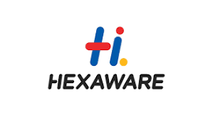
GoFundMe | May 2025 - August 2025
I worked on the peer-to-peer leaderboard nudges which increased donor engagement and tracked user engagement on the website. I also tested the components to make sure the UI and functionality were consistent.
Blumetra Solutions | May 2024 – October 2024
Developed interactive tools for business workflows using Python, Google Cloud APIs, and JavaScript.
Sri Sai Temple Inc | July 2024 – June 2025
Maintained and updated the temple's website to ensure accurate and real-time information.
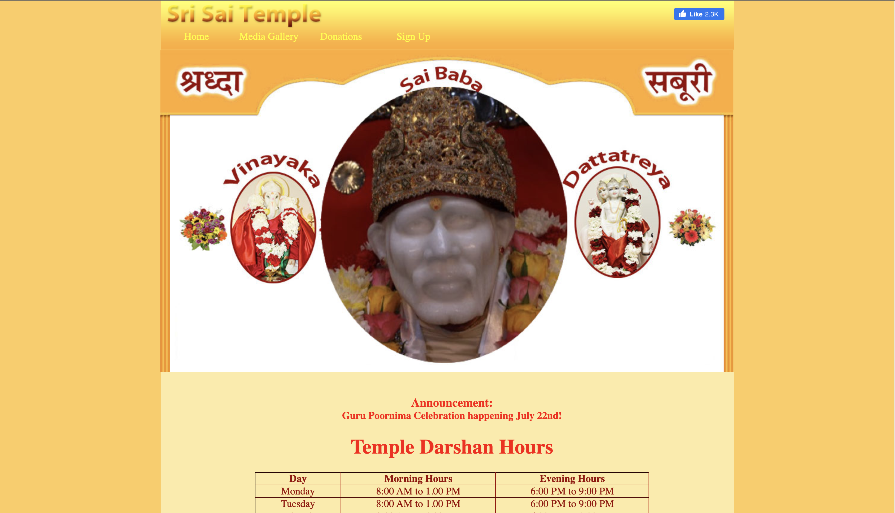
Headstarter | July 2024 – September 2024
Built an inventory management system with full CRUD operations using Python and Django.
Icario | June 2022 – August 2022
Optimized data operations in AWS, Redshift, and Aurora Postgres for health communication systems.
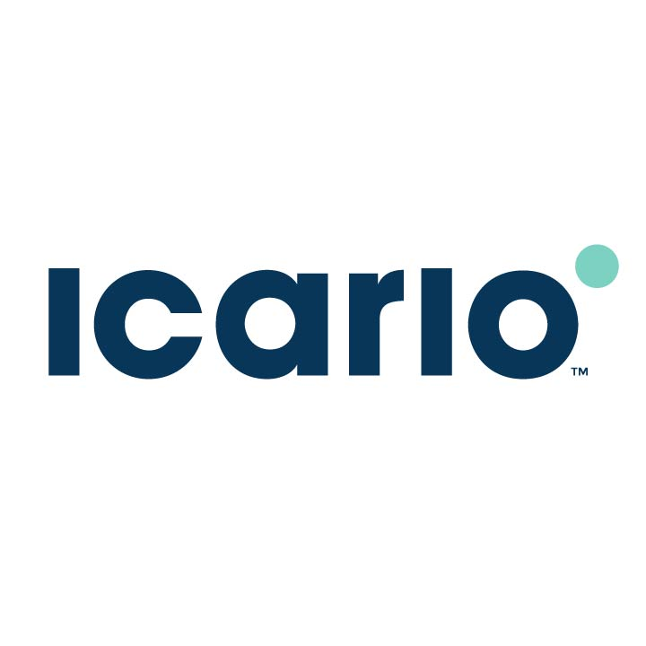
San Jose State University | September 2024 – June 2025
Conducted research on Underwater AI vehicles and the machine learning technologies used to make the vehicles function.
San Jose Consulting Group | October 2024 – Present
Consulted for Tallyrus to enhance their AI Essay Grader by improving accuracy and user experience.

Spartan Analytics | December 2024 - May 2025
Led a SQL workshop and the first ever SQL Datathon at SJSU. Held networking events with companies from the Bay area, and created a sense of community for analytics majors.
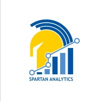
Responsible Computing Club (RCC) at SJSU | August 2024 – December 2024
Led a team of 8 to strategize, develop, and implement an AI Case Competition to engage students in solving real-world challenges. Collaborated with Mozilla to establish the SJSU Mozilla Chapter, promoting ethical AI practices and responsible technology development.
Spartan Analytics | September 2024 – December 2024
Organized speaker panels, social events, and programming workshops, fostering connections between members and industry professionals while enhancing learning opportunities.
The STEAM Foundation | December 2022 – Present
Promoted STEAM education globally by providing schools in Nicaragua and Vietnam with equipment, curriculum, and training. Guided Vietnamese students to clean local beaches by designing and 3D-printing trash grabber tools.
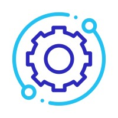
Theta Tau | December 2023 – May 2024
Led professional development events, including mock interviews and networking sessions with companies like Intel and Nokia, fostering career readiness among members.
Theta Tau | September 2023 – December 2023
Managed and mentored a pledge class of 17 members, fostering professionalism and a strong sense of community through structured meetings and team-building activities.
Dougherty Valley High School Speech and Debate Team | August 2022 – June 2023
Directed the middle school Bridge program with over 70 students. Provided logistics and mentorship to participants while coordinating efforts with parents and mentors at tournaments.
Dougherty Valley High School Speech and Debate Team | August 2021 – June 2022
Coached novice competitors, led team meetings for varsity members, and organized drills, resulting in top placements in regional and national tournaments.
The STEAM Foundation | August 2021 – December 2022
Developed and managed 3D printing camps, recruited instructors, and ensured smooth program operations through regular check-ins and parent communication.
Gurus Education | June 2023 – August 2023
Conducted public speaking and debate sessions for students, fostering confidence and effective communication skills in a supportive environment.

Developed a dynamic data visualization tool using Python and Google Cloud APIs for real-time business insights.
Designed and implemented a website with integrated Google Sheets for easy updates and improved user engagement.
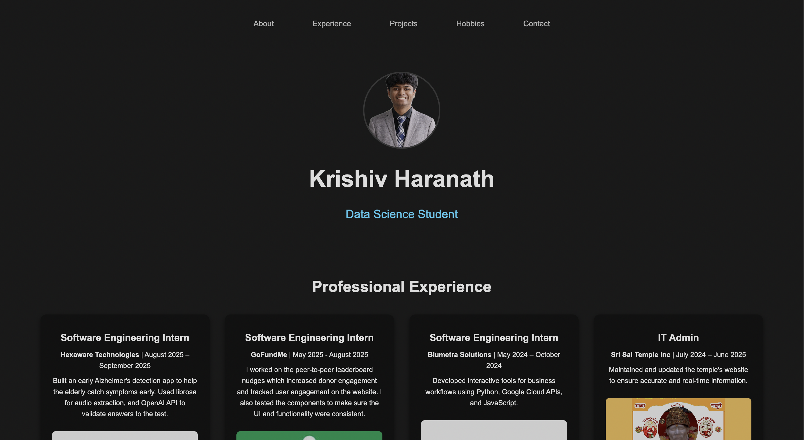
Built a responsive portfolio website to showcase professional experiences and projects.
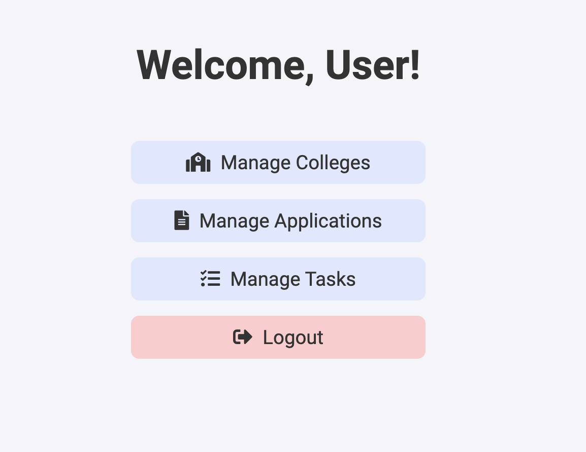
Created a web platform to connect college applicants with mentors for guidance. Developed with React and Firebase for real-time data handling.
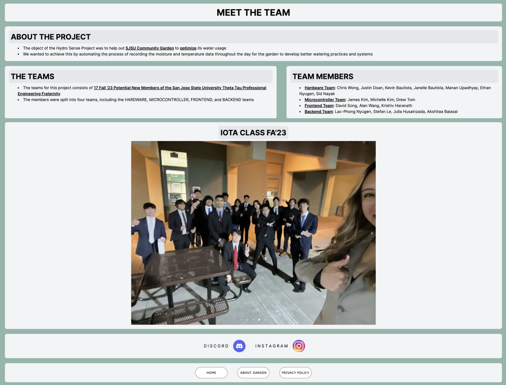
Developed a device for water quality monitoring using Arduino and sensors, providing real-time data for users via a mobile app.
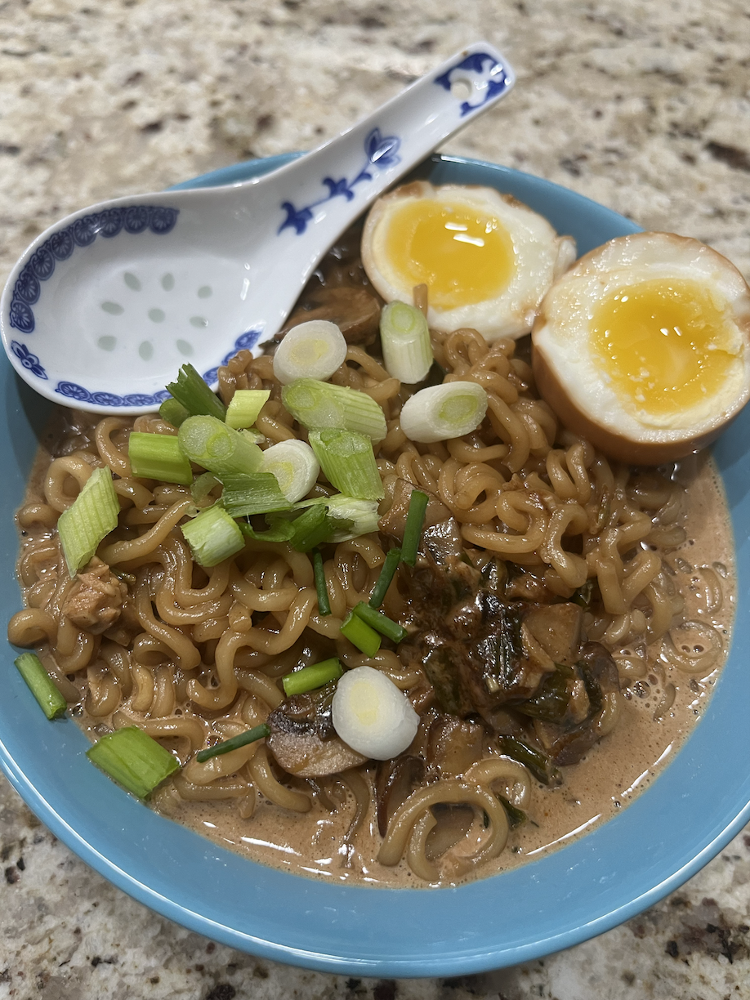
I love trying new recipes and creating my own as well! Check out my cooking Instagram.
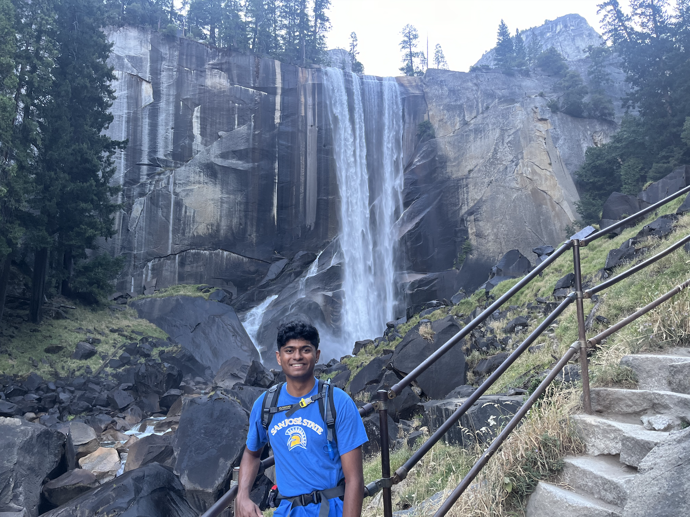
I love exploring new places. An interesting fact is I recently hiked half dome!
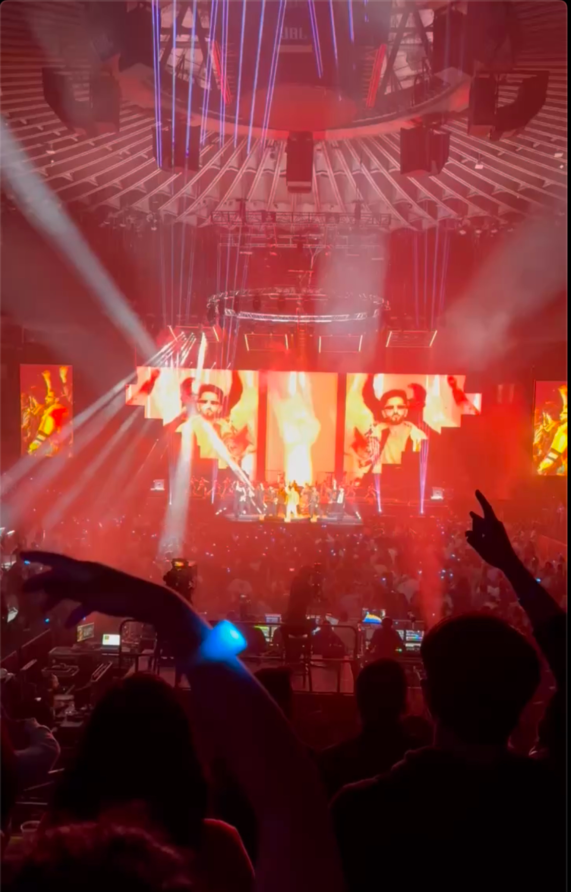
I love going to concerts and listening to music! My top genres are rap and pop.

I love watching and going to games, fantasy football, and playing sports with friends as well!
Feel free to reach out via the platforms below: